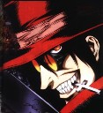

Forums galactiques > Taverne galactique : lieu de discussion informel > IZakaYa - L'alcool encore et toujours...
Pages : 1 2 ... 277 278 279 ... 308 309
| Mac Namarra Réputation à la taverne : 0  07/03 ETU 10:34 | Score : 0 Détails Un homme sombre et rongé par la mort entra par la porte de la taverne en la faisant grincée d'un son lugubre... Il vînt s'assoir sur un petit tabouret, toussota, et prit sa commande
Si vous arrivez à me requinquer avec la boisson la plus forte que vous avez je paye une tournée générale... | ||
| Grabeuh Réputation à la taverne : 1675  07/03 ETU 12:14  | Score : 2 Détails Grabeuh arriva vers le nouveau venu, un verre fumant à la main. On aurait dit de l'acide pur, ou une potion de sorcière, mais en fait, il s'agissait de Krounch, la boisson la plus forte de l'Izakaya. Krounch était une boisson dont on ignorait les effets secondaires. Elle était tellement forte que les commandants en ayant bu avaient tous sombré dans une folie démentielle.
Krounch portait carrement un prénom. Elle était désignée comme une entité vivante, capable d'ôter la vie à quiconque la buvait trop vie. La quantité d'alcool la composant était tellement élevé qu'on la considérait comme une entité à nouveau modèle organique. Krounch était vivante et réclamait une âme. Elle voulait voir si Mac Namarra tiendrait le coup. Tenez, mon brave. Voilà ce que nous avons de plus fort dans cet établissement. Conseils d'utilisation : * Evitez d'en reverser par terre, nous en avons assez de devoir reboucher les trous dans le plancher. * Préparez votre testament avant de commencer à boire. * N'oubliez pas de transmettre toutes nos condoléances à vos proches avant même de rédiger votre testament. | ||
| Mac Namarra Réputation à la taverne : 0 07/03 ETU 12:34 | Score : 1 Détails Il prit le verre et le regarda de son oeuil torve, et dit à Grabeuh : comment cette chose pourrait t elle m'enlevée la vie ? Il fodrait déja que j'en ai une ...Pourquoi préparer un testament ? je n'ai aucun biens ... Et pour ce qiu est de ma famille si vous arrivez à trouver une once de leur trace signalez le moi ...
Il prit le verre et l'avala d'une traite... le rouge lui vînt au joue et il se mit à tousoter . Au bout de trente longues secondes de dure toux, il redressa sa tête avec des yeux plein de vie et remercia vivement Grabeuh de lui avoir redonné un peu de chaleur dans ce corps froid ... Il ajouta : Je reprendrait bien un petit quelque chose d'autre mais de moin fort... une vodka sera la bien venue... se souvenant de sa promesse il ajouta vivement : TOURNEE GENERALE !!! | ||
| Grabeuh Réputation à la taverne : 1675 07/03 ETU 12:43 | Score : 0 Détails ATTENTION ! ILS ARRIVENT !
Qui ça ? LES VERRES DE LA TOURNEE GENERALE ! Spéciale dédicace à tous les futurs médecins dans les amphis de médecine ^^ Grabeuh apporta sa vodka à Mac Namarra, puis msi son superbe costume de bavaroise, costume attitré de la fête de la Bière. Ach so ! Qui fait la gommande ? Eine gommande kroupée ou bien une gommande indifiduelle bour jaque gommandant ? Ach so ! Z'est zi bon de barler gomme une bafaroisse ! Le "langage incompréhensible" est fait exprès, je précise... C'est pour garder l'humour de l'accent... | ||
| Mac Namarra Réputation à la taverne : 0 07/03 ETU 12:47 | Score : 0 Détails Chaqun prend ce qui lui plait à partir du moment que tout le monde s'amuse !!!
| ||
| Peuple de Platinitus Réputation à la taverne : -3  07/03 ETU 13:14 | Score : 0 Détails /Deux ministres arrivérent et se mirent à une table.
Qui est le patron ici ? Moi et mon collégue ,on voudrait de la Spolinivilka,vous en avez... Parle pas trop fort,si notre président savait qu'on passe notre temps à boire ,il serait pas content... Et il comprendrait ces problémes de fortune en ce moment... Tu a raison ,soyons discret. | ||
| Grabeuh Réputation à la taverne : 1675 07/03 ETU 13:22 | Score : 0 Détails Vous en faites pas les gens, c'est TOURNEE GENERALE !
Prenez ce que vous voulez, de toutes façons c'est pas vous qui payez ! | ||
| Peuple de Platinitus Réputation à la taverne : -3 07/03 ETU 13:49 | Score : 1 Détails Ouf ...
Comme tu dis... Bon si on demandais a boire ? C'est tournée générale ,c'est sa ? La note va être salée...donc pour moi et mon amis ,on voudrait 200 verre de vodka,200 de bière ,50 de lait de chevrozer et 10 Spolinivilka , voila c'est tout je pense. Et les petits biscuits... Haaaa oui et quelques centaines de petits biscuits pour accompagner les boissons. | ||
| Traziel Réputation à la taverne : 46  07/03 ETU 14:10 | Score : 0 Détails Un individu portant une longue cape bleue entra dans la salle d'un pas assuré,et tonna:
CHEF! CHEF! UN P'TIT VERRE, ON A SOIFEUUUUUH!! | ||
| Jack Réputation à la taverne : 64  07/03 ETU 18:28 | Score : 0 Détails Un autre ouf bruita la salle.
Jack dit: Vous m'avez vu quand j'ai bu,mais vous ne m'avez pas vu quand j'ai soif Puis il attendat,impatiamentcomme tout pistar de ce jorele retour du serveur mais surtout la boison | ||
| Mac Namarra Réputation à la taverne : 0 08/03 ETU 09:29 | Score : 0 Détails Mac Namarra entra dans la taverne et commanda à boire .
-silence- il regarda au tour de lui et demanda au serveur : Pourquoi la taverne est plus morte que le fond d'un trou noir à cette heure ci ? Que font tout les commandants de leur matinée ? | ||
| Wensicia Corrino Réputation à la taverne : 1642  08/03 ETU 09:32 | Score : 0 Détails "Gnnééééééé" maugréa l'Impératrice Padisha ...
" .... Café ... du .... matin ..." | ||
| Mac Namarra Réputation à la taverne : 0 08/03 ETU 09:41 | Score : 0 Détails Le serveur déposa le café de Wensica sur le comptoir ...
Mac Namarra le prit et l'emporta à Mme Corrino voici votre café chère gente dame . Il posa le café à coté d' elle et ajouta : Mp pour vous . | ||
| Hillary Luetkemeyer Réputation à la taverne : 27  08/03 ETU 09:51 | Score : 2 Détails Hillary Luetkemeyer entra pour la prmeière fois dans le bar, elle vit un homme apporter un cafe à une dame très éllegante. Elle avait choisie le bon moment pour entrer dans le bar car il était très calme, elle s'assit à une table après avoir laissée un mot sur le contoir.
" Hillary Luetkemeyer commande une bouteille de sake et un astro-pastis. Dame à robe rouge au fond de la salle. " | ||
| Mac Namarra Réputation à la taverne : 0 09/03 ETU 11:32 | Score : 0 Détails Un homme entra dans la taverne et alla s'assoir à une table ...
un pastis bien frappé s'il vous plaît . et des pillules rouges avec ... | ||
| Bormo Réputation à la taverne : 0  09/03 ETU 12:08 | Score : 0 Détails Pour moi ce sera un Bloody Mary !
| ||
| Jack Réputation à la taverne : 64 09/03 ETU 18:55 | Score : 0 Détails HRP:Tu n'as toujour pas compris?Il ne faut pas abréger tes mots,je te dis:
DEGAGE. | ||
| Mac Namarra Réputation à la taverne : 0 09/03 ETU 18:57 | Score : 0 Détails Tien mon chèr Bormo,comme l'on se retrouve... puis je vous offrir un petit rafraîchissement ?
| ||
| Caleri Nuura Réputation à la taverne : 119  09/03 ETU 19:01 | Score : 0 Détails Bonjour monsieur.
Caleri venait de surgir du coin du bar, tenant dans sa main une balle de plusieurs couleurs. Je m'appelle Caleri, heureux de faire votre connaissance. | ||
| Mac Namarra Réputation à la taverne : 0 09/03 ETU 19:12 | Score : 0 Détails Bonjour monsieur Nuura, Mac Namarra alla près de Caleri pour ne pas criez dans le somptueux bar, il lui sera chaleureusment la main et dit, Heureux de faire vôtre connaisssance, je suis actuellement à la recherche d'une coalition et j'aimerais savoir si vous partit d'une d'elle. Si oui, contacter moi sur ma messagerie personnelle...
Sur ce, je vous dit bonne soirée. |
Pages : 1 2 ... 277 278 279 ... 308 309
Forums galactiques > Taverne galactique : lieu de discussion informel > IZakaYa - L'alcool encore et toujours...